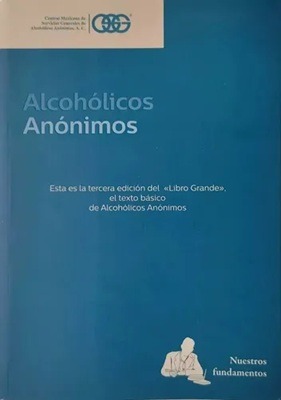

📖
Reflexión Diaria
Selecciona una fecha
Selecciona una fecha para visualizar la reflexión.
Leer reflexión →ALCOHÓLICOS ANÓNIMOS
Transmitir el mensaje es nuestra finalidad.
Compañeros Activos
Servicios Activos
Visitas al Sitio
Días Compartidos de Sobriedad
Selecciona una fecha para consultar los recursos de recuperación.
Selecciona una fecha para visualizar la reflexión.
Leer reflexión →Selecciona una fecha para visualizar la experiencia.

Fundado el 22 de mayo de 2026
NUESTRA CASAEl Grupo Oxford abrió sus puertas con un propósito claro: transmitir el mensaje de recuperación a todo aquel que aún sufre por el alcoholismo.
Inspirados en los principios de Alcohólicos Anónimos, buscamos ofrecer un espacio de unidad, servicio y recuperación donde cada persona encuentre esperanza, compañerismo y una nueva forma de vivir.
“Transmitir el mensaje es nuestra finalidad”

Literatura oficial para el estudio y la práctica del programa.
Más literatura →
Publicaciones, productos y materiales de apoyo para los grupos.
Más productos →Calcula tu progreso.
Bienestar y nutrición.
Congresos, aniversarios, desayunos y actividades de servicio.
Compartiendo experiencia, fortaleza y esperanza.
Nace Alcohólicos Anónimos.
Fundación del Grupo Oxford.